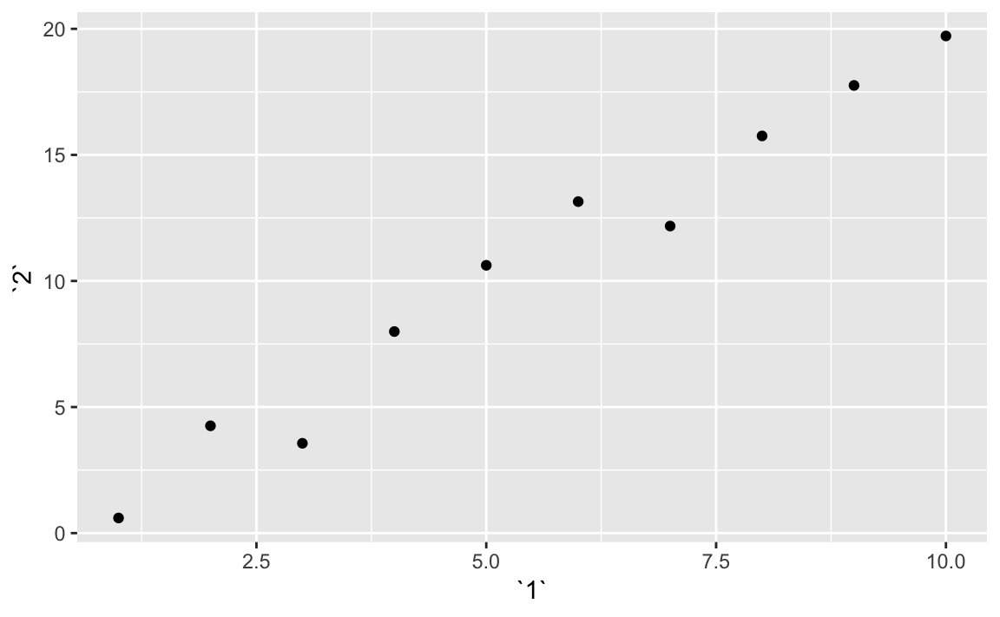

2 Tibble
2.1 Exercises
How can you tell if an object is a tibble? (Hint: try printing mtcars,
which is a regular data frame).
Compare and contrast the following operations on a data.frame and
equivalent tibble. What is different? Why might the default data frame
behaviours cause you frustration?
df <- data.frame(abc = 1, xyz = "a")
df$x
df[, "xyz"]
df[, c("abc", "xyz")]
df <- tibble(abc = 1, xyz = "a")
df$x
df[, "xyz"]
df[, c("abc", "xyz")] If you have the name of a variable stored in an object, e.g. var <- "mpg",
how can you extract the reference variable from a tibble?
var <- "mpg"
as_tibble(mtcars)[[var]]
#> [1] 21.0 21.0 22.8 21.4 18.7 18.1 14.3 24.4 22.8 19.2 17.8 16.4 17.3 15.2
#> [15] 10.4 10.4 14.7 32.4 30.4 33.9 21.5 15.5 15.2 13.3 19.2 27.3 26.0 30.4
#> [29] 15.8 19.7 15.0 21.4
as_tibble(mtcars)[var]
#> # A tibble: 32 x 1
#> mpg
#> <dbl>
#> 1 21
#> 2 21
#> 3 22.8
#> 4 21.4
#> 5 18.7
#> 6 18.1
#> # ... with 26 more rowsPractice referring to non-syntactic names in the following data frame by:
Extracting the variable called `1`.Plotting a scatterplot of `1` vs `2`.
Creating a new column called `3` which is `2` divided by `1`.Renaming the columns to `one`, `two` and `three`.
```r
df <- df %>% rename(one = `1`, two = `2`, three = `3`)
```What does tibble::enframe() do? When might you use it?
# enframe() converts named atomic vectors or lists to two-column data frames.
enframe(1:3)
#> # A tibble: 3 x 2
#> name value
#> <int> <int>
#> 1 1 1
#> 2 2 2
#> 3 3 3
enframe(c(a = 5, b = 7))
#> # A tibble: 2 x 2
#> name value
#> <chr> <dbl>
#> 1 a 5
#> 2 b 7What option controls how many additional column names are printed at the footer of a tibble?